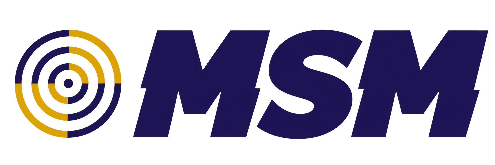

Current roleProject Manager and Scrum Master
- Lead delivery of concurrent AI and SaaS client projects, owning scope, schedules, priorities, and delivery decisions as the main point of contact for each client and its leadership.
- Act as Scrum Master for client teams, facilitating sprint events and Inspect and Adapt, and drive a shippable increment each sprint, replacing releases every two to three months.
View full responsibilities
- Manage delivery across a 5-team Agile Release Train for Meta Smart Factory, its WMS, and CloserOS, leading PI Planning, program board dependencies, and ROAM risk decisions each PI.
- Gather requirements with clients and Product Owners, map process flows, write traceable user stories in Jira, Trello, and ClickUp, and sign off agreed scope before each sprint.
- Own QA and release readiness, leading defect triage, regression testing, and client UAT, and giving the final release sign-off after each System Demo with clients and stakeholders.
- Track delivery KPIs, budgets, and risks, report status to clients and leadership through n8n-automated reporting, and sustain roughly 80% sprint goal achievement across all teams.
Malaga Consulting
Products I’ve helped deliver
- Meta Smart Factory and WMS
- CloserOS
- Imane
- StayByBike